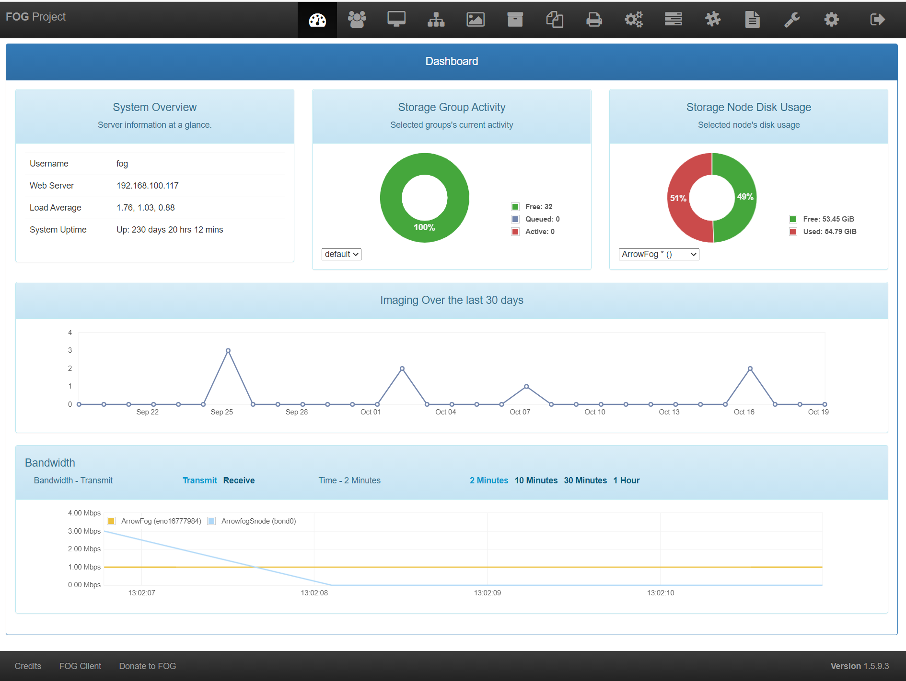
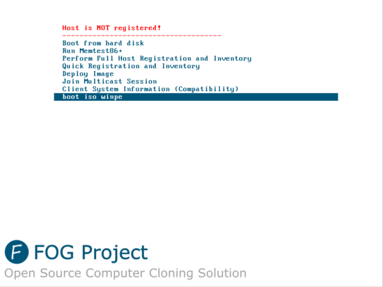
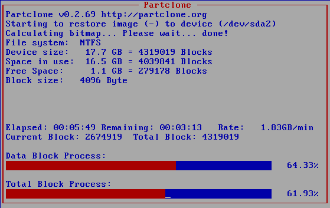
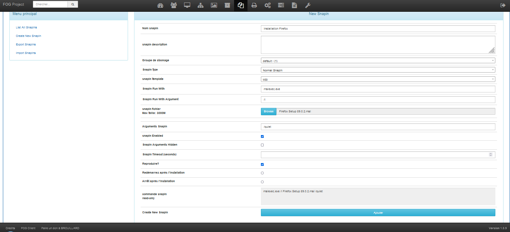

📍 Présentation
Ce projet a consisté à mettre en place une solution complète de déploiement d’images systèmes et de logiciels à l’aide de FOG, un outil libre et open source basé sur Linux. Le but était de simplifier l’administration d’un parc informatique tout en appliquant les compétences acquises en réseau, systèmes et automatisation.
Nous avons installé FOG sur une machine Debian, puis configuré les différents modules nécessaires pour capturer une image système, déployer cette image sur plusieurs machines, et gérer le cycle de vie des postes via une interface web intuitive.
🛠️ Fonctionnalités principales de FOG
- Déploiement d’image système (Windows/Linux)
- Support du démarrage réseau (PXE)
- Inventaire automatisé des machines
- Déploiement en unicast et multicast
- Gestion des snapins (installation de logiciels)
- Réinitialisation de mot de passe Windows
🧪 Étapes du projet
- Préparation de la VM Debian et installation du serveur FOG
- Configuration du DHCP pour permettre le boot PXE
- Connexion des clients au serveur via le réseau
- Enregistrement et classification des machines clientes
- Capture d’une image Windows 10 préparée (avec logiciels)
- Déploiement de cette image sur d’autres clients
- Création de snapins pour installer automatiquement OCS Inventory et Avast
🖼️ Captures d'écran
Voici quelques illustrations du projet :




⚙️ Problèmes rencontrés
- Configuration DHCP conflictuelle avec le réseau principal
- Erreur lors du boot PXE sur certaines machines (incompatibilité UEFI/Legacy)
- Temps d’attente long pour le multicast avec peu de clients
- Permissions root à accorder pour les scripts de snapin
Ces problèmes ont été résolus par l'ajustement des paramètres réseau, l'utilisation d'une VM bridgée, et la configuration manuelle de certains services du serveur Debian.
📊 Résultats obtenus
- ✅ FOG installé et configuré sur Debian
- 🖥️ Machines clientes détectées automatiquement via PXE
- 📸 Image Windows 10 capturée avec succès
- 🚀 Déploiement fonctionnel sur plusieurs machines
- 🔁 Fonction multicast testée avec 3 clients
- 📦 Installation automatisée d’OCS et Avast via Snapins
🎯 Compétences mises en œuvre
- Administration système sous Linux (Debian)
- Gestion réseau et configuration DHCP/PXE
- Automatisation avec snapins et scripts Bash
- Travail en équipe et documentation technique
📚 Ressources utilisées
Ces ressources m’ont permis de mieux comprendre les mécanismes internes de FOG et d’anticiper les éventuels blocages pendant le projet.